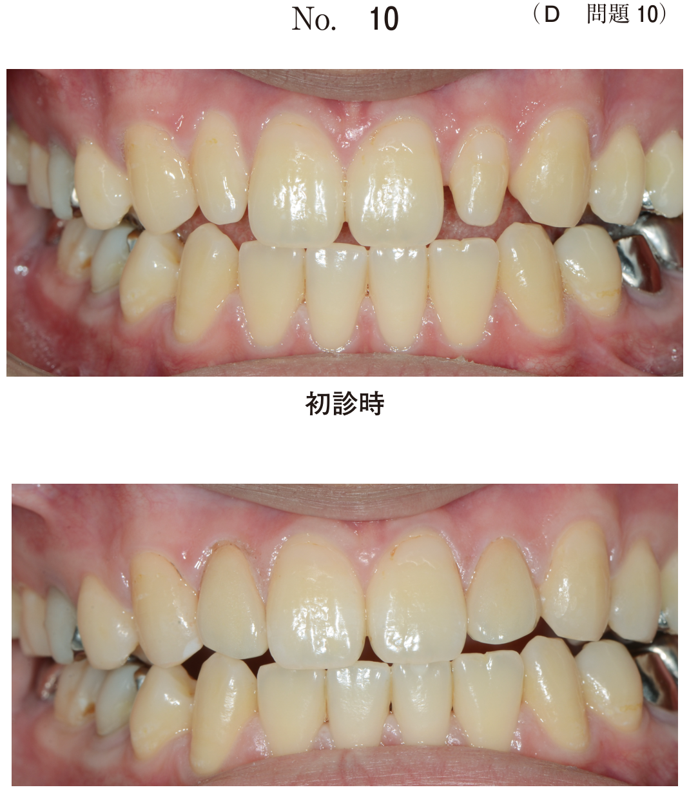
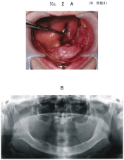
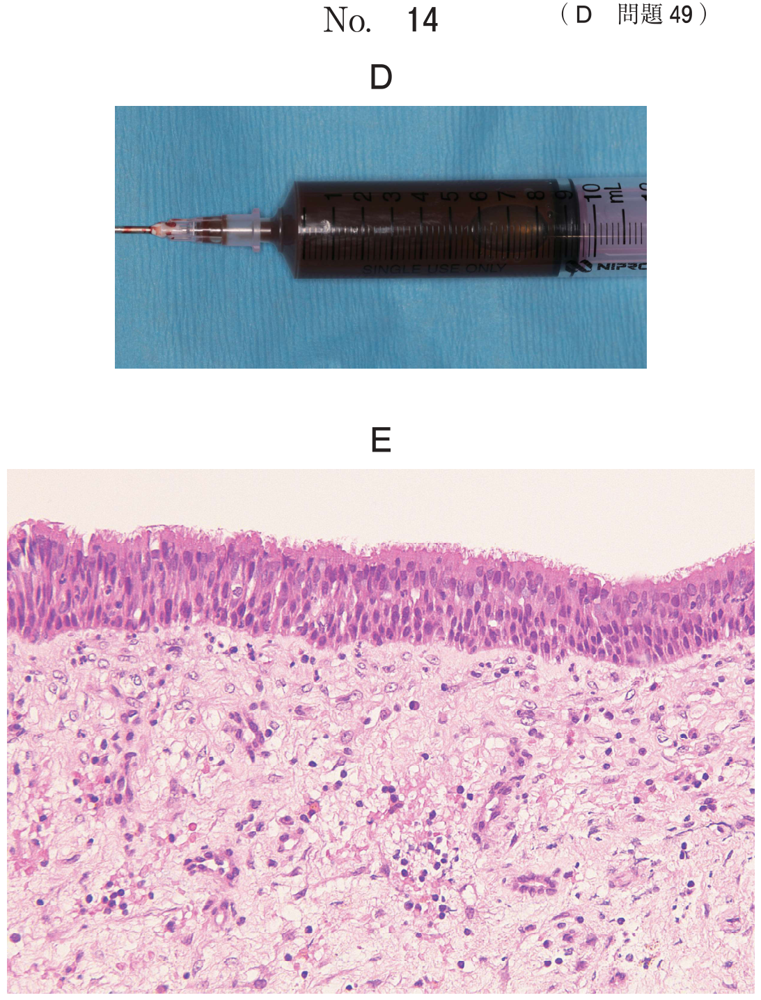

| 種類 | 組織学的特徴 | 特記事項 |
|---|---|---|
| 線維性エプーリス | 膠原線維の増殖 | 最も頻度が高い |
| 巨細胞性エプーリス | 多核巨細胞を含む肉芽組織 | = 周辺性巨細胞肉芽腫 |
| 血管腫性エプーリス | 血管の増生が主体 | 妊娠性エプーリスを含む |
| 骨形成性エプーリス | 骨・セメント質様硬組織の形成 | = 周辺性骨形成線維腫 |
| 先天性エプーリス | 顆粒細胞が増殖 | 新生児、女児に多い |
| 病型 | 好発年齢 | 特徴 | 予後 |
|---|---|---|---|
| Letterer-Siwe病 | 乳幼児 | 急性に全身に発症（発熱、貧血、血小板減少、肝脾腫） | 不良 |
| Hand-Schüller-Christian病 | 小児 | 三大症状：骨欠損・尿崩症・眼球突出 | 中間 |
| 好酸球性肉芽腫 | 若年〜高齢 | 単一骨に限局、他臓器の骨や頭蓋骨に好発 | 良好 |
口腔所見：歯肉の腫脹・発赤、歯の動揺、歯槽骨の吸収（floating teeth像）がみられることがある。
20歳の女性。上顎右側前歯部の腫瘤を主訴として来院した。2年前から腫瘤に気付いていたが放置していたという。腫瘤は有茎性で、隣接歯の動揺およびエックス線写真上で骨吸収像は認めない。初診時の口腔内写真（別冊No.15A）と生検時のH−E染色病理組織像（別冊No.15B）を別に示す。 適切な処置はどれか。1つ選べ。

【解説】上顎前歯部歯肉の有茎性腫瘤で、骨吸収なし → エプーリス（線維性エプーリス）と考えられる。エプーリスの治療は骨膜を含めて切除する。骨膜上での切除では再発しやすい。上顎骨部分切除や隣接歯を含めた切除は過剰。減量術は線維性骨異形成症の治療法。
73歳の女性。摂食困難を主訴として来院した。6か月前から義歯の不適合に気付き、1か月前から食事時に痛みが生じるようになったという。初診時の口腔内写真（別冊No.2A）、エックス線写真（別冊No.2B）及び生検時のH−E染色病理組織像（別冊No.2C）を別に示す。 適切な治療法はどれか。1つ選べ。

【解説】高齢女性、義歯不適合に伴う歯肉の腫瘤 → 義歯性線維腫と考えられる。義歯の慢性刺激による反応性の線維性腫瘤であり、治療は腫瘤切除＋義歯の調整。悪性腫瘍ではないため抗癌剤は不適切。真菌感染やアレルギーでもないため抗真菌薬やステロイドも不適切。区域切除は過剰。
65歳の女性。上顎前歯部の腫瘤を主訴として来院した。3か月前から徐々に増大してきたという。初診時の口腔内写真（別冊No.26A）、エックス線画像（別冊No.26B）及び生検時のH-E染色病理組織像（別冊No.26C）を別に示す。 適切な対応はどれか。1つ選べ。

【解説】上顎前歯部の腫瘤で、3か月で徐々に増大。生検で良性の腫瘤性病変（エプーリスや線維腫）と診断された場合、治療は切除。良性腫瘤であり経過観察では改善しない。上顎部分切除や放射線療法は過剰な治療。抗菌薬は感染症に対する治療であり不適切。